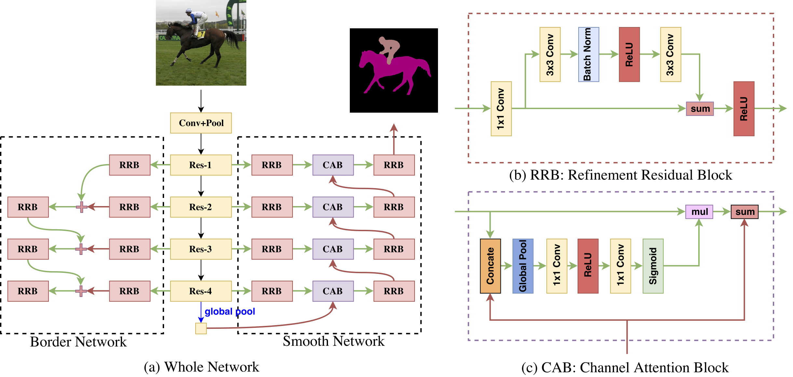

Changqian Yu (余昌黔)
Changqian Yu is a second-year graduate student majoring in Computer Vision at Huazhong University of Science and Technology. He is pursuing his Master Degree under the supervision of A.P. Changxin Gao and Prof. Nong Sang (2016-2019). He works as a research intern at Megvii (Face++) Inc. mentored by Dr. Gang Yu and supervised by Dr. Jian Sun. His research interests focus on the Computer Vision and Artificial Intelligence, specifically on the topic of Segmentation.
知乎 changqian_yu@hust.edu.cnInterests
- Artificial Intelligence
- Computer Vision
- Segmentation
Education
- Msc in Computer Vision, 2016 Huazhong Univ Of Science And Tech
- Bsc in Automation, 2012 Shandong University

News
- [Apr 2018] I have presented my poster on the Vision and Learning Seminar(VALSE 2018) in Dalian, LiaoNing Province, China.
- [Feb 2018] Our paper DFN is accepted to CVPR 2018 in Salt Lake City, Ultah State!
- [Jun 2017] I joined Megvii (Face++) as a Research Intern. During the time, I mainly researched in the topic of Segmentation.
Conference

Learning a Discriminative Feature Network for Semantic Segmentation
Changqian Yu, Jingbo Wang, Chao Peng, Changxin Gao, Gang Yu, Nong SangIEEE Conference on Computer Vision and Pattern Recognition (CVPR), 2018
Abstract
Most existing methods of semantic segmentation still suffer from two aspects of challenges:
intra-class inconsistency and inter-class indistinction. To tackle
these two problems, we propose a Discriminative Feature Network (DFN),
which contains two sub-networks: Smooth Network and Border Network.
Specifically, to handle the intra-class inconsistency problem, we
specially design a Smooth Network with Channel Attention Block and
global average pooling to select the more discriminative features.
Furthermore, we propose a Border Network to make the bilateral features
of boundary distinguishable with deep semantic boundary supervision.
Based on our proposed DFN, we achieve state-of-the-art performance
86.2% mean IOU on PASCAL VOC 2012 and 80.3% mean IOU on Cityscapes
dataset.
@inproceedings{Yu_2018_CVPR,
author = {Yu, Changqian and Wang, Jingbo and Peng, Chao and Gao, Changxin and Yu, Gang and Sang, Nong},
title = {Learning a Discriminative Feature Network for Semantic Segmentation},
booktitle = {The IEEE Conference on Computer Vision and Pattern Recognition (CVPR)},
month = {June},
year = {2018}
}
author = {Yu, Changqian and Wang, Jingbo and Peng, Chao and Gao, Changxin and Yu, Gang and Sang, Nong},
title = {Learning a Discriminative Feature Network for Semantic Segmentation},
booktitle = {The IEEE Conference on Computer Vision and Pattern Recognition (CVPR)},
month = {June},
year = {2018}
}
Link
Research Leader: 俞刚(Yu Gang)Research Collaborator: 彭超(Peng Chao)
Research Partner: 邵帅(Shao Shuai)
unique visitors since Mar. 2018
Last update: Mar. 2018